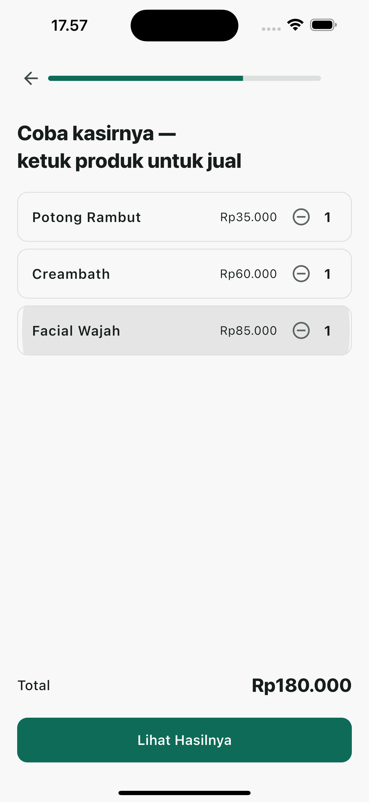
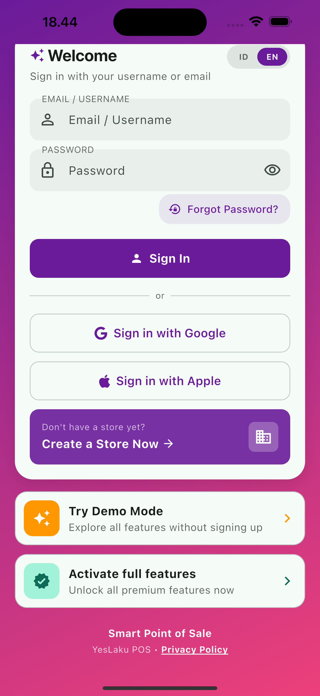
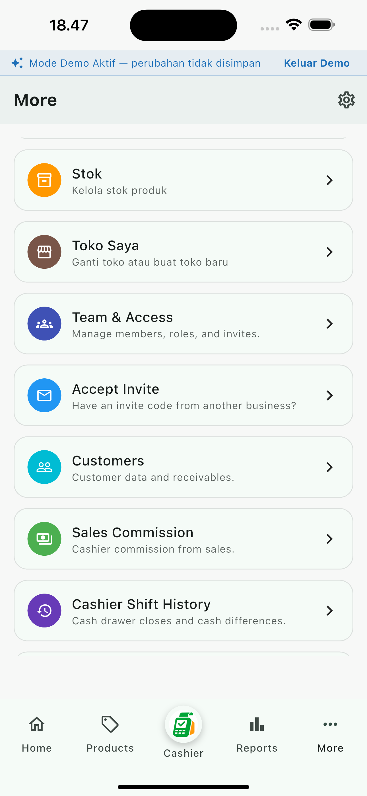

Aplikasi Kasir untuk UMKM Indonesia
Aplikasi kasir offline yang selalu siap jualan
YesLaku adalah aplikasi kasir (POS) yang tetap bisa menyelesaikan transaksi meski internet mati, lalu tersinkron otomatis begitu terhubung kembali — plus stok, laporan, multi outlet, dan peran karyawan dalam satu aplikasi.
Gratis diunduh · Android (HP & tablet) · versi iOS menyusul

Jualan tidak seharusnya berhenti karena sinyal
Masalah yang sering dialami pemilik usaha kecil — dan cara YesLaku menanganinya.
😖 Masalahnya
Internet mati saat toko ramai, transaksi harus dicatat manual dulu. Stok dihitung manual dan sering tidak sesuai kenyataan. Baru tahu untung atau rugi setelah tutup toko dan menghitung ulang semuanya.
✅ Dengan YesLaku
Transaksi kasir tetap selesai tanpa internet, lalu tersinkron otomatis begitu perangkat terhubung kembali. Setiap perubahan stok tercatat sebagai pergerakan, bukan angka yang bisa tertimpa. Laporan untung/rugi terhitung otomatis dari data penjualan dan pengeluaran nyata.
Semua yang dibutuhkan toko dalam satu aplikasi
Fitur inti YesLaku, dari kasir sampai laporan.
Kasir Offline-First
Transaksi tetap jalan tanpa internet — barcode scan, diskon, tahan pesanan, dan cetak struk via Bluetooth.
Manajemen Stok
Stok dicatat sebagai riwayat pergerakan, bukan angka tunggal — jadi selalu sesuai kenyataan.
Pelajari cara kelola stok →Laporan Keuangan
Pendapatan, rata-rata transaksi, produk terlaris, hingga estimasi laba kotor dan bersih — otomatis.
Pelajari cara baca laporan →Multi Outlet
Kelola beberapa cabang dalam satu akun bisnis, dengan stok dan penjualan per outlet.
Pelajari multi outlet →Tim & Peran
Owner, Manager, Kasir, dan Gudang masing-masing hanya melihat data yang sesuai perannya.
Pelajari peran karyawan →Fitur Islami (Opsional)
Estimasi zakat usaha yang transparan metodenya, jadwal salat, dan dzikir — tidak mengganggu jualan.
Pelajari estimasi zakat →Kenapa pemilik usaha memilih YesLaku
⏱️ Tidak kehilangan penjualan
Toko tetap bisa melayani pembeli walau internet sedang bermasalah.
📈 Stok yang bisa dipercaya
Setiap perubahan stok tercatat, sehingga jumlahnya selalu bisa ditelusuri.
🔒 Data sesuai peran
Karyawan kasir atau gudang tidak melihat margin dan laporan keuangan penuh.
🧮 Untung/rugi tanpa Excel
Estimasi laba kotor dan bersih terhitung otomatis dari data transaksi nyata.
Cara kerja YesLaku
Dari unduh sampai jualan pertama, dalam beberapa langkah.
Unduh & buat akun
Daftar dengan email, lalu buat profil usaha Anda.
Tambahkan produk
Masukkan produk satu per satu atau impor sekaligus, lengkap dengan harga dan stok awal.
Mulai jualan
Ketuk produk di layar kasir, pilih metode bayar, dan cetak atau bagikan struk.
Pantau laporan
Lihat penjualan, stok, dan estimasi untung kapan saja dari Beranda.
Tampilan Aplikasi
Lihat sendiri kemudahannya
Cuplikan asli dari aplikasi yang sedang berjalan — bukan rekayasa.


Demo interaktif kasir di dalam aplikasi
YesLaku belum resmi terbit di Play Store & App Store, sehingga belum ada tangkapan layar resmi dari listing toko aplikasi. Ketiga gambar di atas adalah cuplikan asli dari aplikasi yang sedang berjalan. Galeri ini akan diperbarui begitu listing resmi tersedia.
Untuk usaha seperti apa YesLaku dibuat
Warung & toko kelontong
Pemilik warung yang sering kehilangan sinyal internet saat transaksi ramai, dan butuh kasir yang tetap jalan tanpa koneksi.
Baca panduan stok →Usaha jasa (salon, bengkel, dll.)
Usaha berbasis layanan yang ingin mencatat setiap transaksi jasa dan produk pendukungnya dalam satu kasir yang sama.
Baca panduan laporan →Bisnis dengan lebih dari satu cabang
Pemilik yang ingin memantau stok dan penjualan dari beberapa lokasi toko sekaligus, dari satu akun.
Baca panduan multi outlet →Toko dengan banyak karyawan
Pemilik yang mempekerjakan kasir dan staf gudang terpisah, dan ingin setiap peran hanya melihat data yang relevan.
Baca panduan peran karyawan →Panduan
Bacaan praktis seputar mengelola toko — tidak hanya tentang YesLaku.
Cara Kelola Stok Toko Tanpa Excel
Kenapa stok sering meleset, dan cara mencatatnya agar selalu sesuai kenyataan.
Baca Panduan → Multi OutletAplikasi Kasir untuk Bisnis 2 Cabang atau Lebih
Yang perlu dipikirkan sebelum membuka cabang kedua, dan cara mengelolanya dari satu aplikasi.
Baca Panduan → TimCara Atur Peran Karyawan di Toko
Kenapa tidak semua karyawan perlu melihat data yang sama, dan cara membaginya.
Baca Panduan → LaporanCara Tahu Untung Rugi Toko Setiap Hari
Kenapa menunggu tutup toko untuk menghitung untung itu berisiko, dan cara memantaunya harian.
Baca Panduan → Zakat UsahaCara Menghitung Zakat Usaha
Dasar perhitungan zakat perdagangan, dan cara mengestimasinya dari data usaha.
Baca Panduan →Pertanyaan yang Sering Diajukan
Apakah YesLaku bisa dipakai tanpa internet?
Bisa. YesLaku dibangun offline-first — transaksi kasir tetap bisa diselesaikan tanpa koneksi internet, lalu tersinkron otomatis ke cloud begitu perangkat terhubung kembali.
Apakah YesLaku gratis?
Ya, YesLaku gratis diunduh dan dipakai. Tersedia langganan opsional YesLaku Pro (Rp63.000/bulan atau Rp474.000/tahun) untuk kebutuhan seperti jumlah outlet lebih banyak.
Apakah YesLaku tersedia untuk iPhone?
YesLaku saat ini tersedia untuk Android (HP dan tablet). Versi iOS sedang dalam pengembangan dan akan menyusul.
Bagaimana YesLaku menjaga privasi data usaha saya?
Data disimpan menggunakan Firebase dengan standar keamanan industri, dan setiap karyawan hanya melihat data sesuai perannya. Baca selengkapnya di Kebijakan Privasi.
Bagaimana cara mengelola stok dengan lebih dari satu outlet?
Setiap outlet punya catatan stok dan penjualan sendiri di dalam satu akun bisnis. Lihat langkah lengkapnya di panduan Aplikasi Kasir untuk Bisnis 2 Cabang atau Lebih.
Apakah karyawan kasir bisa melihat laporan untung usaha?
Tidak, kecuali diberi peran Manager atau Owner. Peran Kasir dan Gudang tidak menerima data margin atau laporan keuangan penuh. Detail lengkap ada di panduan Cara Atur Peran Karyawan di Toko.
Bagaimana cara mulai mencetak struk?
YesLaku mendukung cetak struk thermal 58mm lewat printer Bluetooth, dan struk digital yang bisa dibagikan meski sedang offline.
Bagaimana cara menghapus akun atau usaha saya?
Penghapusan akun bisa dilakukan kapan saja lewat menu Profil Saya di aplikasi. Penghapusan sebuah usaha (toko) bersifat permanen setelah masa tenggang 7 hari. Detail ada di Kebijakan Privasi.
Mulai kelola toko Anda hari ini
Unduh YesLaku dan selesaikan transaksi pertama Anda dalam hitungan menit — dengan atau tanpa internet.
Download di Play StoreAnda akan diarahkan ke listing Play Store YesLaku untuk memasang aplikasinya.